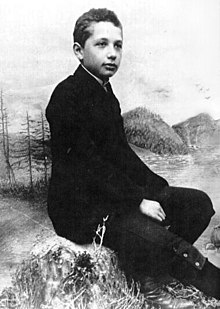
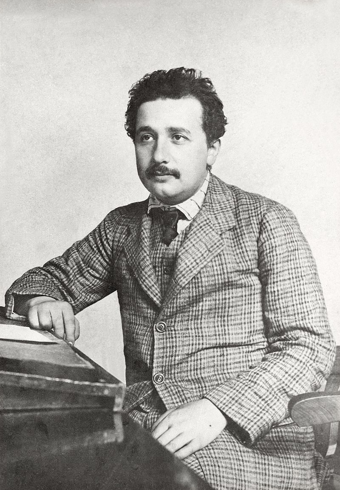
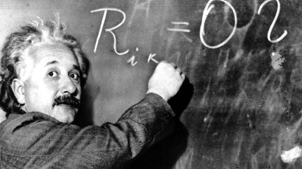
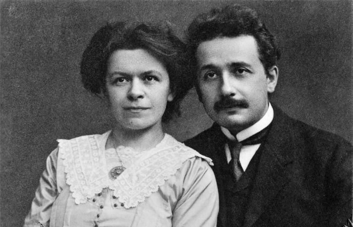
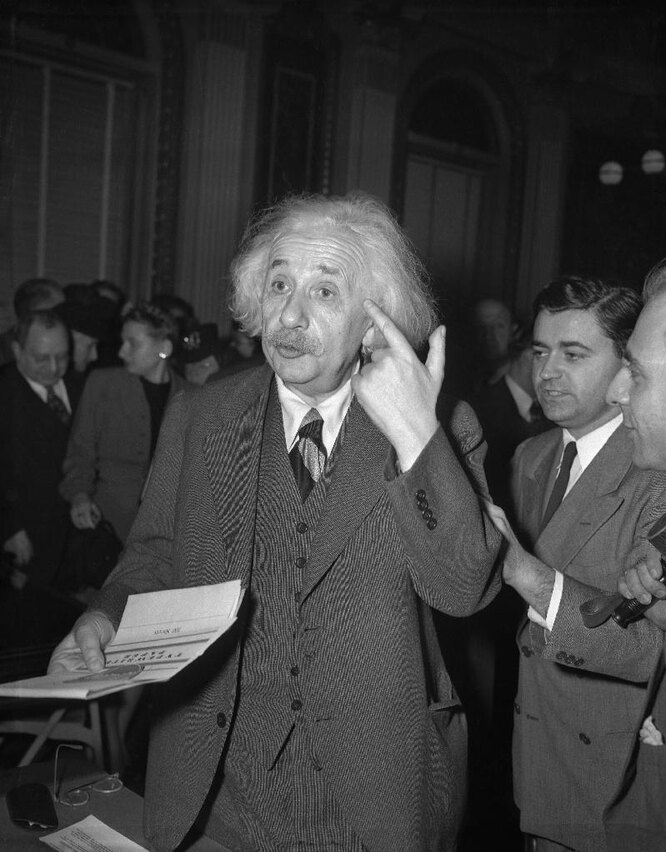

Ранние годы
Альберт Эйнштейн родился 14 марта 1879 года в южно-германском городе Ульме, в небогатой еврейской семье.
Отец, Герман Эйнштейн, был в это время совладельцем небольшого предприятия по производству перьевой набивки для матрацев и перин. Мать, Паулина Эйнштейн, происходила из семьи состоятельного торговца кукурузой Юлиуса Дерцбахера и Йетты Бернхаймер.
Летом 1880 года семья переселилась в Мюнхен, где Герман Эйнштейн вместе с братом Якобом основал небольшую фирму по торговле электрическим оборудованием. В Мюнхене родилась младшая сестра Альберта Мария.
Начальное образование Альберт Эйнштейн получил в местной католической школе. По его собственным воспоминаниям, он в детстве пережил состояние глубокой религиозности, которое оборвалось в 12 лет. По инициативе матери он с шести лет начал заниматься игрой на скрипке. Увлечение музыкой сохранялось у Эйнштейна на протяжении всей жизни. Уже находясь в США в Принстоне, в 1934 году Альберт Эйнштейн дал благотворительный концерт, где исполнял на скрипке произведения Моцарта в пользу эмигрировавших из нацистской Германии учёных и деятелей культуры.
В гимназии Альберт не был в числе первых учеников (исключение составляли математика и латынь). Укоренившаяся система механического заучивания материала учащимися, а также авторитарное отношение учителей к ученикам вызывало у Альберта Эйнштейна неприятие, поэтому он часто вступал в споры со своими преподавателями. В 1894 году Эйнштейны переехали из Мюнхена в итальянский город Павию, близ Милана, куда братья Герман и Якоб перевели свою фирму. Сам Альберт оставался с родственниками в Мюнхене ещё некоторое время, чтобы окончить все шесть классов гимназии. Так и не получив аттестата зрелости, в 1895 году он присоединился к своей семье в Павии.
Осенью 1895 года Альберт Эйнштейн прибыл в Швейцарию, чтобы сдать вступительные экзамены в Высшее техническое училище в Цюрихе и по окончании обучения стать преподавателем физики. Блестяще проявив себя на экзамене по математике, он в то же время провалил экзамены по ботанике и французскому языку, что не позволило ему поступить в Цюрихский Политехникум. Однако директор училища посоветовал молодому человеку поступить в выпускной класс школы в Арау (Швейцария), чтобы получить аттестат и повторить поступление.
В кантональной школе Арау Альберт Эйнштейн посвящал своё свободное время изучению электромагнитной теории Максвелла, начал размышлять над физическими проблемами. В сентябре 1896 года он успешно сдал все выпускные экзамены в школе, за исключением экзамена по французскому языку, и получил аттестат, а в октябре 1896 года был принят в Политехникум на педагогический факультет. Здесь он подружился с однокурсником, математиком Марселем Гроссманом, а также познакомился с сербской студенткой факультета медицины Милевой Марич, впоследствии ставшей его женой. В этом же году Эйнштейн отказался от германского гражданства.
В 1900 году Эйнштейн окончил Политехникум, получив диплом преподавателя математики и физики. Экзамены он сдал успешно, но не блестяще. Многие профессора высоко оценивали способности студента Эйнштейна, но никто не захотел помочь ему продолжить научную карьеру. Сам Эйнштейн позже вспоминал.
Хотя в следующем, 1901 году, Эйнштейн получил гражданство Швейцарии, вплоть до весны 1902 года он не мог найти постоянное место работы — даже школьным учителем. Вследствие отсутствия заработка он буквально голодал, не принимая пищу несколько дней подряд. Это стало причиной болезни печени, от которой учёный страдал до конца жизни.
Преодолеть трудности помог бывший однокурсник Марсель Гроссман, рекомендовавший Эйнштейна на должность эксперта III класса в Федеральное Бюро патентования изобретений (Берн) с окладом 3500 франков в год.
Эйнштейн работал в Бюро патентов с июля 1902 года по октябрь 1909 года, занимаясь преимущественно экспертной оценкой заявок на изобретения. В 1903 году он стал постоянным работником Бюро. Характер работы позволял Эйнштейну посвящать свободное время исследованиям в области теоретической физики.
6 января 1903 года Эйнштейн женился на двадцатисемилетней Милеве Марич. У них родились трое детей. Первой, ещё до брака, родилась дочь Лизерль (1902). Вероятнее всего, она умерла во младенчестве — в последнем из сохранившихся писем Эйнштейна, где она упоминается (сентябрь 1903), речь идёт о каких-то осложнениях после скарлатины.
Научная жизнь
Ученый Альберт Эйнштейн получил известность благодаря своим научным работам, которые позволили ему стать одним из основателей теоретической физики. Одна из самых его известных работ – общая и специальная теория относительности. В активе этого ученого и мыслителя более 600 работ на самые различные темы.
В 1921 году Альберт Эйнштейн стал лауреатом Нобелевской премии по физике. Премию он получил за открытие фотоэлектрического эффекта.
На вручении говорилось и о других работах физика. В частности, теорию относительности и гравитации предполагалось оценить после их подтверждения в будущем.
Любопытно, что сам Эйнштейн свою теорию относительности объяснял с юмором: «Если подержать над огнем руку одну минуту, то она покажется часом, а вот проведенный с любимой девушкой час покажется одной минутой». Альберт Эйнштейн говорил, что открыл свою теорию относительности совершенно случайно. Однажды он заметил, что автомобиль, двигающийся относительно другой машины с одинаковой скоростью и в одном направлении, остается неподвижным.
Эйнштейн утверждал, что если тело генерирует энергию в видео излучения, то уменьшение его массы пропорционально количеству выделенной им энергии.
Так родилась известная формула: количество энергии равно произведению массы тела на квадрат скорости света (E=mc2). Скорость света при этом равна 300 тысячам километров в секунду.
Даже ничтожно малая масса, разогнанная до скорости света, будет излучать огромное количество энергии. Изобретение атомной бомбы подтвердило правоту этой теории.
Личная жизнь
Альберт женился на Милеве Марич в 26 лет. Несмотря на 11-летний брак, вскоре у супругов появились разногласия по поводу семейной жизни, по слухам, из-за того, что Альберт был еще тем ловеласом и имел около десяти пассий. Однако он предложил жене контракт о сожительстве, согласно которому та должна была соблюдать некоторые условия, например, периодически стирать вещи. Но по контракту у Милевы и Альберта не предусматривалось никаких любовных отношений: бывшие супруги даже спали раздельно. От первого брака у гения были дети: младший сын умер, находясь в психиатрической лечебнице, а со старшим у ученого не сложились отношения.
После развода с Милевой ученый женился на Эльзе Левенталь, своей кузине. Однако ему также интересна была дочь Эльзы, не питавшая взаимных чувств к мужчине, который старше нее на 18 лет.
Многие, кто знал ученого, отмечали, что он – необычайно добрый человек, готов был подать руку помощи и признать ошибки.
Последние годы жизни. Смерть
В 1955 году здоровье Эйнштейна резко ухудшилось. Он написал завещание и сказал друзьям: «Свою задачу на Земле я выполнил». Последним его трудом стало незаконченное воззвание с призывом предотвратить ядерную войну.
Альберт Эйнштейн умер в Принстоне, в понедельник 18 апреля 1955 года в 1 час 25 минут на 77 году жизни; причиной смерти стала аневризма аорты. Перед смертью он произнёс несколько слов по-немецки, но американская медсестра не смогла их потом воспроизвести. Не воспринимая никаких форм культа личности, он запретил пышное погребение с громкими церемониями, для чего пожелал, чтобы место и время захоронения не разглашались. 19 апреля 1955 года без широкой огласки состоялись похороны великого учёного, на которых присутствовало всего 12 самых близких друзей. Его тело было сожжено в крематории Юинг-Семетери, а пепел развеян по ветру.